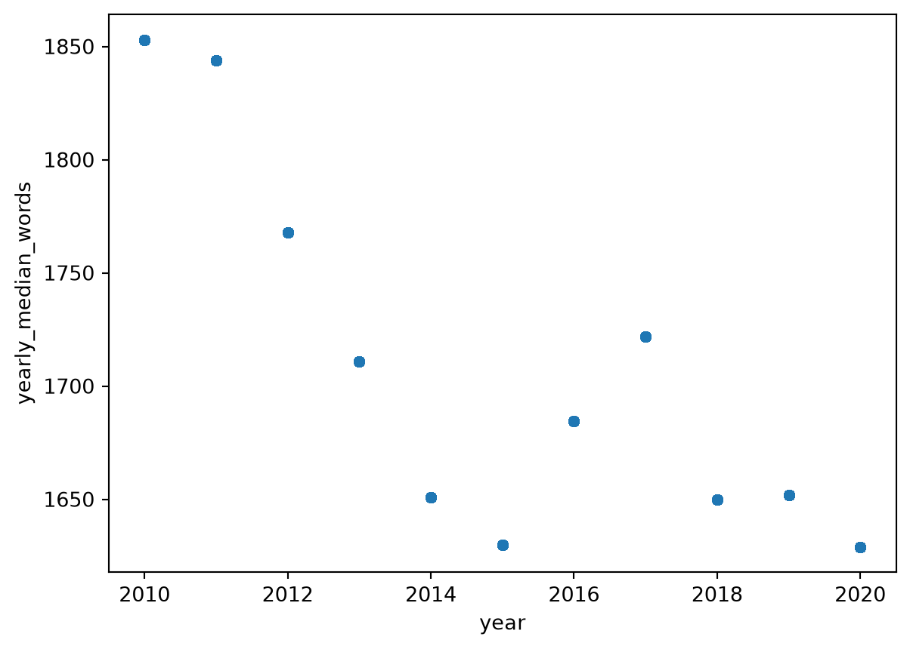

import pandas as pd
talks = pd.read_csv("data/talks.csv")Introduction to Pandas
Analyzing datasets in real-world situations often involve thousands or even millions of rows. Within these raw datasets, it is likely that the inputted data contain various inconsistencies. For example, missing data, duplicate records, trailing spaces within text, and incorrect data types are all common issues. It is virtually impossible to manually review each row and standardize the data within a reasonable time frame. Even if one manages to clean the dataset, grouping and filtering manually would require exponentially more time. Thankfully, there is a library package in Python called pandas that efficiently solves these problems. Pandas is versatile–it contains hundreds of functions and methods to handle efficient cleaning, grouping, filtering, and visualizations for massive datasets. In this tutorial, we will demonstrate useful pandas functions to address the aforementioned issues on an example dataset on General Conference talks.
Structure of DataFrames
In Python and within the pandas library, data can be organized in a two-dimensional table with rows and columns called a DataFrame. Of course, one can create a two-dimensional array in Python that essentially acts just like a DataFrame. However, pandas adds functionalities that enhance and simplify data analysis, such as making row and column labels carry meaning into the code, allowing each column to have its own data type, allowing selection and alignment using row or column labels, and having function names that directly correspond to the task they perform. An example of row and column labels carrying meaning into code: There is a table called score that contains student names and three of their exam scores. Using regular Python code, one would need to remember the specific numerical index of the desired cell to access it, like score[0,1]. With pandas, one would just need to remember the column name to access the desired cell, like score[“Joe”, “final_exam”]. A Series is a one-dimensional sequence of values within a DataFrame, such as a column.
Data Analysis
Let’s open the dataset in Positron. The function .read_csv() from pandas can import csv files into an IDE for further manipulation.
Upon inspection, we can observe that the information in the dataset includes the talk name, the speaker, which conference the talk was given, the date of the talk, the text, and many other variables. To observe if and which columns have missing data, we can use the function isna().
talks.isna().sum()talk_name 0
speaker 0
session 0
date 0
month 0
year 0
conference 0
role 0
speaker_order 0
num_words 0
runtime 131
talk_number 0
link 0
kicker 2
text 0
dtype: int64The output reveals that the “runtime” column has 131 cells missing data and the “kicker” column has 2 cells missing data. Some possible solutions include filling the cells with a calculated metric like a mean or median, or removing it entirely. For this example demonstration, we will ignore these missing values as the two columns are not part of the variables we want to focus on. From here on out, we will be looking at the talk name, speaker, number of words in the talk, year, the conference the talk was given in, and the text. The code as follows will create a new DataFrame and display these variables while filtering all others out.
new_talks = talks[["talk_name", "speaker", "num_words", "year", "conference", "text"]].copy()
new_talks.head()| talk_name | speaker | num_words | year | conference | text | |
|---|---|---|---|---|---|---|
| 0 | Finding Joy in Christ | Steven J. Lund | 1514 | 2020 | October 2020 | The Lord does not ask our Aaronic Priesthood y... |
| 1 | The Culture of Christ | William K. Jackson | 1500 | 2020 | October 2020 | What a magnificent world we live in and share,... |
| 2 | Let Patience Have Her Perfect Work, and Count ... | Jeremy R. Jaggi | 1492 | 2020 | October 2020 | Two years ago, my youngest brother, Chad, step... |
| 3 | Ask, Seek, and Knock | Milton Camargo | 1484 | 2020 | October 2020 | Four months ago, in my study of the scriptures... |
| 4 | Enduring Power | Kelly R. Johnson | 1430 | 2020 | October 2020 | In reviewing the teachings of our dear prophet... |
Side note: The .head() function will limit the output to five rows. We can enter any number within the parentheses to specify the number of rows.
A common method for filtering is by using a boolean mask and the .loc[] function. The .loc[] function takes in a row label and a column label, or boolean conditions as its parameters. If we wanted to observe talks that occurred between 2017 to 2020 and had more than 1300 words, the code to perform this is as follows.
recent_mask = (
new_talks["year"].between(2017,2020) &
(new_talks["num_words"] > 1300)
)
new_talks.loc[recent_mask].head()| talk_name | speaker | num_words | year | conference | text | |
|---|---|---|---|---|---|---|
| 0 | Finding Joy in Christ | Steven J. Lund | 1514 | 2020 | October 2020 | The Lord does not ask our Aaronic Priesthood y... |
| 1 | The Culture of Christ | William K. Jackson | 1500 | 2020 | October 2020 | What a magnificent world we live in and share,... |
| 2 | Let Patience Have Her Perfect Work, and Count ... | Jeremy R. Jaggi | 1492 | 2020 | October 2020 | Two years ago, my youngest brother, Chad, step... |
| 3 | Ask, Seek, and Knock | Milton Camargo | 1484 | 2020 | October 2020 | Four months ago, in my study of the scriptures... |
| 4 | Enduring Power | Kelly R. Johnson | 1430 | 2020 | October 2020 | In reviewing the teachings of our dear prophet... |
Sorting and counting variables can be performed with the functions value_counts() and sort_values(). The function value_counts() counts how many instances a unique value appears. For example, the code that would count how many talks were in each conference is as follows.
new_talks['conference'].value_counts()conference
October 2015 39
October 2014 38
October 2013 38
October 2012 38
October 2011 38
October 2010 38
October 2016 37
April 2014 37
April 2013 37
April 2012 37
April 2011 37
April 2010 37
April 2018 36
April 2017 36
April 2015 36
October 2017 35
April 2016 35
October 2020 34
October 2019 34
April 2020 33
October 2018 33
April 2019 31
Name: count, dtype: int64The function sort_values() can receive two parameters: the column to order by and the order to sort them by. For example, the code that orders the DataFrame by number of words in descending order is as follows.
new_talks.sort_values(by="num_words", ascending=False)| talk_name | speaker | num_words | year | conference | text | |
|---|---|---|---|---|---|---|
| 502 | Your Wonderful Journey Home | Dieter F. Uchtdorf | 2802 | 2013 | April 2013 | We are honored this evening with the presence ... |
| 567 | Help Them Aim High | Henry B. Eyring | 2727 | 2012 | October 2012 | I’m so grateful for this opportunity to be in ... |
| 535 | A Living Testimony | Henry B. Eyring | 2719 | 2011 | April 2011 | My beloved young sisters, you are the bright h... |
| 574 | The Caregiver | Henry B. Eyring | 2709 | 2012 | October 2012 | I am grateful to be in your company tonight. T... |
| 755 | Dare to Stand Alone | Thomas S. Monson | 2691 | 2011 | October 2011 | My beloved brethren, it is a tremendous privil... |
| ... | ... | ... | ... | ... | ... | ... |
| 793 | The Power of the Book of Mormon | Thomas S. Monson | 408 | 2017 | April 2017 | My dear brothers and sisters, I greet you most... |
| 792 | Kindness, Charity, and Love | Thomas S. Monson | 407 | 2017 | April 2017 | My dear brethren, I am honored by the privileg... |
| 772 | Till We Meet Again | Thomas S. Monson | 339 | 2013 | October 2013 | My brothers and sisters, my heart is full as w... |
| 731 | Hosanna Shout | Russell M. Nelson | 269 | 2020 | April 2020 | Now, my dear brothers and sisters, as we comme... |
| 657 | Ministering | Russell M. Nelson | 243 | 2018 | April 2018 | Thank you, Elder Gong and Elder Soares, for yo... |
794 rows × 6 columns
Grouping and aggregating are often used in combination with the functions groupby() and agg(). The function groupby() receives a column name and specifies as_index as parameters. If as_index is true, the column name becomes an index label. If as_index is false, the column name remains a column label. The function agg() is a bit more complicated. The following code will demonstrate groupby() and agg() to produce a table that displays the mean and median number of words per talk within each conference.
new_talks.groupby('conference', as_index=False).agg(
mean_words=('num_words', 'mean'),
median_words=('num_words', 'median'))| conference | mean_words | median_words | |
|---|---|---|---|
| 0 | April 2010 | 1797.810811 | 1831.0 |
| 1 | April 2011 | 1801.081081 | 1743.0 |
| 2 | April 2012 | 1750.378378 | 1756.0 |
| 3 | April 2013 | 1726.351351 | 1711.0 |
| 4 | April 2014 | 1649.729730 | 1642.0 |
| 5 | April 2015 | 1707.444444 | 1673.0 |
| 6 | April 2016 | 1650.428571 | 1687.0 |
| 7 | April 2017 | 1671.055556 | 1631.0 |
| 8 | April 2018 | 1518.861111 | 1605.5 |
| 9 | April 2019 | 1705.064516 | 1739.0 |
| 10 | April 2020 | 1647.181818 | 1790.0 |
| 11 | October 2010 | 1771.578947 | 1856.5 |
| 12 | October 2011 | 1787.578947 | 1846.5 |
| 13 | October 2012 | 1798.578947 | 1775.5 |
| 14 | October 2013 | 1687.947368 | 1730.0 |
| 15 | October 2014 | 1657.710526 | 1657.0 |
| 16 | October 2015 | 1617.000000 | 1593.0 |
| 17 | October 2016 | 1682.567568 | 1682.0 |
| 18 | October 2017 | 1797.800000 | 1778.0 |
| 19 | October 2018 | 1673.151515 | 1654.0 |
| 20 | October 2019 | 1612.029412 | 1575.0 |
| 21 | October 2020 | 1566.176471 | 1553.5 |
The parameters for agg() are the new column names and other parentheses that specify the column to calculate over and the type of aggregation. In the code block above, median_words and mean_words are the new column names, num_words is the column for calculation, and mean and median are the type of aggregations performed.
The function transform() can be used in conjunction with groupby() to add a new column to the original table. It takes in a form of aggregation, such as “mean” or “median,” as its parameter. The following code will demonstrate how to use transform() to create a new column that displays the median number of words per year.
new_talks['yearly_median_words']= (
talks.groupby('year')['num_words'].transform('median')
)Python includes a variety of graphs and charts to visualize data, such as bar charts, line graphs, and histograms through the library matplotlib. The following code will plot the median number of words per conference over the years with a scatterplot.
import matplotlib as plt
new_talks.plot.scatter(
x="year", y="yearly_median_words", marker="o"
)
Conclusion
We’ve explored some of the most basic and commonly used functions in pandas, but there is still much more to be explored. Continuing to practice data analysis with these tools on other datasets is the surefire way to increase efficiency, accuracy, and confidence as an analyst. There are many more functions in pandas that are extremely helpful in data analysis. It is encouraged that the reader conducts further research into these functions to strengthen their skills and knowledge.